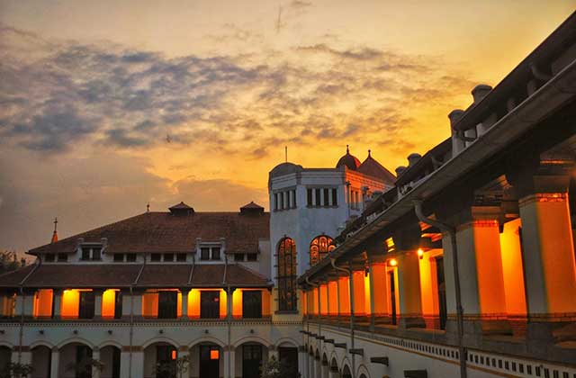

1.candi borobudur
Ikon wisata paling terkenal di Jawa Tengah adalah Candi Borobudur yang terletak di Magelang, tepatnya 40 km arah barat laut Yogyakarta. Tempat wisata di Jawa Tengah ini merupakan peninggalan agama Buddha masa lampau. Selain merupakan candi Buddha terbesar di dunia yang sarat akan nilai sejarah, Borobudur juga didapuk sebagai salah satu dari 7 keajaiban dunia. Di kompleks Candi Borobudur sendiri terdapat 1.460 relief dan 504 stupa yang hingga sekarang masih terjaga keasliannya.
2. candi prambanan
Masih tentang objek wisata sejarah. Kali ini ada Candi Prambanan yang terletak di Klaten, tepatnya di wilayah perbatasan Jawa Tengah dan Yogyakarta. Anda tentu tidak asing kan dengan legenda Roro Jonggrang yang meminta Bandung Bondowoso membangun 1.000 candi dalam satu malam? Ya, Prambanan-lah jawabannya. Ketika berkunjung ke tempat wisata di Jawa Tengah ini, Anda tidak hanya akan disuguhi dengan jejak sejarah yang eksotis, tapi juga hijaunya pepohonan yang tumbuh di sekitar area candi. Pun karena terletak di perbatasan, candi ini dikelola secara kerja sama antara DIY dan Jawa Tengah.
3. kota lama
Masih di Semarang, salah satu objek wisata menarik yang sayang untuk dilewatkan ketika berada di Kota Lumpia ini adalah Kota Lama. Kota Lama sendiri merupakan sebuah kawasan yang oleh pemerintah kolonial dulu dijadikan sebagai pusat perniagaan. Di sini, Anda bisa menjumpai bangunan-bangunan peninggalan Belanda, seperti Gereja Blenduk, Stasiun Kereta Api Tawang, Jembatan Mberok, PT Pelni, Pabrik Rokok Praoe Lajar, Polder Air Tawang, dan masih banyak lagi yang lainnya.
4. lawang sewu
Selain Kota Lama, Anda juga bisa menyaksikan bangunan peninggalan zaman kolonial di Lawang Sewu, Semarang. Meskipun namanya Lawang Sewu, bukan berarti bangunan ini memiliki 1.000 pintu. Hanya saja bangunan ini memang memiliki jumlah pintu yang sangat banyak.Pada zaman dulu, Lawang Sewu dipakai sebagai kantor pusat perkeretaapian di wilayah Semarang. Tidak heran kalau berkunjung ke sini, Anda akan melihat banyak miniatur kereta yang dipajang di meja yang dilindungi kaca-kaca.

5. masjid agung jateng
Berkeliling Semarang rasanya tak lengkap kalau tidak mengunjungi salah satu bangunan paling ikonik di kota ini. Ya, apa lagi kalau bukan Masjid Agung Jawa Tengah? Masjid yang dibangun sejak tahun 2001 dan selesai pada tahun 2006 ini mengadaptasi arsitektur Islam, Romawi, dan Jawa, lho.Di sini, Anda bisa menaiki tower masjid dan melihat indahnya Kota Semarang dari ketinggian. Harga tiket masuknya pun cukup murah, yakni hanya sekitar Rp7.000. Yang paling menarik di sini adalah payung raksasa berjumlah 6 buah seperti yang terdapat di Masjid Nabawi di Tanah Suci.

6. grojogan sewu
Dari Semarang kita beranjak ke arah timur, tepatnya di Karanganyar. Di kabupaten ini ada sebuah objek wisata yang selalu ramai dikunjungi wisatawan setiap tahunnya, yaitu Grojogan Sewu Tawangmangu.Tempat wisata di Jawa Tengah ini paling pas dikunjungi saat musim penghujan. Selain udaranya lebih sejuk, debit air yang banyak juga membuat air terjun terlihat makin megah. Banyak juga fasilitas yang disediakan pihak pengelola untuk para pengunjung.

7. Gudeg Yogyakarta
Gudeg adalah makanan khas Yogyakarta dan Jawa Tengah yang terbuat dari nangka muda yang dimasak dengan santan. Perlu waktu berjam-jam untuk membuat masakan ini. Warna coklat biasanya dihasilkan oleh daun jati yang dimasak bersamaan. Gudeg dimakan dengan nasi dan disajikan dengan kuah santan kental, ayam kampung, telur, tahu dan sambal goreng krecek. Ada berbagai varian gudeg, antara lain: * Gudeg kering, yaitu gudeg yang disajikan dengan areh kental, jauh lebih kental daripada santan pada masakan padang. * Gudeg basah, yaitu gudeg yang disajikan dengan areh encer. * Gudeg Solo, yaitu gudeg yang arehnya berwarna putih.